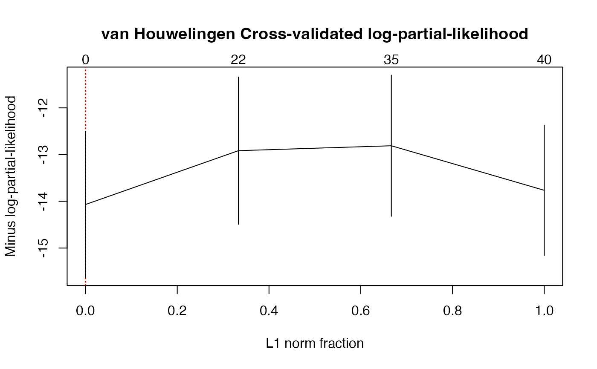

This function cross-validates larsDR_coxph models.
Arguments
- data
A list of three items:
xthe explanatory variables passed tolarsDR_coxph'sXplanargument,timepassed tolarsDR_coxph'stimeargument,statuslarsDR_coxph'sstatusargument.
- method
A character string specifying the method for tie handling. If there are no tied death times all the methods are equivalent. The Efron approximation is used as the default here, it is more accurate when dealing with tied death times, and is as efficient computationally.
- nfold
The number of folds to use to perform the cross-validation process.
- fraction
L1 norm fraction.
- plot.it
Shall the results be displayed on a plot ?
- se
Should standard errors be plotted ?
- givefold
Explicit list of omited values in each fold can be provided using this argument.
- scaleX
Shall the predictors be standardized ?
- scaleY
Should the
timevalues be standardized ?- folddetails
Should values and completion status for each folds be returned ?
- allCVcrit
Should the other 13 CV criteria be evaled and returned ?
- details
Should all results of the functions that perform error computations be returned ?
- namedataset
Name to use to craft temporary results names
- save
Should temporary results be saved ?
- verbose
Should some CV details be displayed ?
- ...
Other arguments to pass to
larsDR_coxph.
Value
- nt
The number of components requested
- cv.error1
Vector with the mean values, across folds, of, per fold unit, Cross-validated log-partial-likelihood for models with 0 to nt components.
- cv.error2
Vector with the mean values, across folds, of, per fold unit, van Houwelingen Cross-validated log-partial-likelihood for models with 0 to nt components.
- cv.error3
Vector with the mean values, across folds, of iAUC_CD for models with 0 to nt components.
- cv.error4
Vector with the mean values, across folds, of iAUC_hc for models with 0 to nt components.
- cv.error5
Vector with the mean values, across folds, of iAUC_sh for models with 0 to nt components.
- cv.error6
Vector with the mean values, across folds, of iAUC_Uno for models with 0 to nt components.
- cv.error7
Vector with the mean values, across folds, of iAUC_hz.train for models with 0 to nt components.
- cv.error8
Vector with the mean values, across folds, of iAUC_hz.test for models with 0 to nt components.
- cv.error9
Vector with the mean values, across folds, of iAUC_survivalROC.train for models with 0 to nt components.
- cv.error10
Vector with the mean values, across folds, of iAUC_survivalROC.test for models with 0 to nt components.
- cv.error11
Vector with the mean values, across folds, of iBrierScore unw for models with 0 to nt components.
- cv.error12
Vector with the mean values, across folds, of iSchmidScore (robust BS) unw for models with 0 to nt components.
- cv.error13
Vector with the mean values, across folds, of iBrierScore w for models with 0 to nt components.
- cv.error14
Vector with the mean values, across folds, of iSchmidScore (robust BS) w for models with 0 to nt components.
- cv.se1
Vector with the standard error values, across folds, of, per fold unit, Cross-validated log-partial-likelihood for models with 0 to nt components.
- cv.se2
Vector with the standard error values, across folds, of, per fold unit, van Houwelingen Cross-validated log-partial-likelihood for models with 0 to nt components.
- cv.se3
Vector with the standard error values, across folds, of iAUC_CD for models with 0 to nt components.
- cv.se4
Vector with the standard error values, across folds, of iAUC_hc for models with 0 to nt components.
- cv.se5
Vector with the standard error values, across folds, of iAUC_sh for models with 0 to nt components.
- cv.se6
Vector with the standard error values, across folds, of iAUC_Uno for models with 0 to nt components.
- cv.se7
Vector with the standard error values, across folds, of iAUC_hz.train for models with 0 to nt components.
- cv.se8
Vector with the standard error values, across folds, of iAUC_hz.test for models with 0 to nt components.
- cv.se9
Vector with the standard error values, across folds, of iAUC_survivalROC.train for models with 0 to nt components.
- cv.se10
Vector with the standard error values, across folds, of iAUC_survivalROC.test for models with 0 to nt components.
- cv.se11
Vector with the standard error values, across folds, of iBrierScore unw for models with 0 to nt components.
- cv.se12
Vector with the standard error values, across folds, of iSchmidScore (robust BS) unw for models with 0 to nt components.
- cv.se13
Vector with the standard error values, across folds, of iBrierScore w for models with 0 to nt components.
- cv.se14
Vector with the standard error values, across folds, of iSchmidScore (robust BS) w for models with 0 to nt components.
- folds
Explicit list of the values that were omited values in each fold.
- lambda.min1
Vector with the standard error values, across folds, of, per fold unit, Cross-validated log-partial-likelihood for models with 0 to nt components.
- lambda.min2
Vector with the standard error values, across folds, of, per fold unit, van Houwelingen Cross-validated log-partial-likelihood for models with 0 to nt components.
- lambda.min1
Optimal Nbr of components, min Cross-validated log-partial-likelihood criterion.
- lambda.se1
Optimal Nbr of components, min+1se Cross-validated log-partial-likelihood criterion.
- lambda.min2
Optimal Nbr of components, min van Houwelingen Cross-validated log-partial-likelihood.
- lambda.se2
Optimal Nbr of components, min+1se van Houwelingen Cross-validated log-partial-likelihood.
- lambda.min3
Optimal Nbr of components, max iAUC_CD criterion.
- lambda.se3
Optimal Nbr of components, max+1se iAUC_CD criterion.
- lambda.min4
Optimal Nbr of components, max iAUC_hc criterion.
- lambda.se4
Optimal Nbr of components, max+1se iAUC_hc criterion.
- lambda.min5
Optimal Nbr of components, max iAUC_sh criterion.
- lambda.se5
Optimal Nbr of components, max+1se iAUC_sh criterion.
- lambda.min6
Optimal Nbr of components, max iAUC_Uno criterion.
- lambda.se6
Optimal Nbr of components, max+1se iAUC_Uno criterion.
- lambda.min7
Optimal Nbr of components, max iAUC_hz.train criterion.
- lambda.se7
Optimal Nbr of components, max+1se iAUC_hz.train criterion.
- lambda.min8
Optimal Nbr of components, max iAUC_hz.test criterion.
- lambda.se8
Optimal Nbr of components, max+1se iAUC_hz.test criterion.
- lambda.min9
Optimal Nbr of components, max iAUC_survivalROC.train criterion.
- lambda.se9
Optimal Nbr of components, max+1se iAUC_survivalROC.train criterion.
- lambda.min10
Optimal Nbr of components, max iAUC_survivalROC.test criterion.
- lambda.se10
Optimal Nbr of components, max+1se iAUC_survivalROC.test criterion.
- lambda.min11
Optimal Nbr of components, min iBrierScore unw criterion.
- lambda.se11
Optimal Nbr of components, min+1se iBrierScore unw criterion.
- lambda.min12
Optimal Nbr of components, min iSchmidScore unw criterion.
- lambda.se12
Optimal Nbr of components, min+1se iSchmidScore unw criterion.
- lambda.min13
Optimal Nbr of components, min iBrierScore w criterion.
- lambda.se13
Optimal Nbr of components, min+1se iBrierScore w criterion.
- lambda.min14
Optimal Nbr of components, min iSchmidScore w criterion.
- lambda.se14
Optimal Nbr of components, min+1se iSchmidScore w criterion.
- errormat1-14
If
details=TRUE, matrices with the error values for every folds across each of the components and each of the criteria- completed.cv1-14
If
details=TRUE, matrices with logical values for every folds across each of the components and each of the criteria:TRUEif the computation was completed andFALSEit is failed.- larsmodfull
Lars model fitted on the residuals.
- All_indics
All results of the functions that perform error computation, for each fold, each component and error criterion.
Details
It only computes the recommended van Houwelingen CV partial likelihood
criterion criterion. Set allCVcrit=TRUE to retrieve the 13 other
ones.
References
plsRcox, Cox-Models in a high dimensional setting in R, Frederic
Bertrand, Philippe Bastien, Nicolas Meyer and Myriam Maumy-Bertrand (2014).
Proceedings of User2014!, Los Angeles, page 152.
Deviance residuals-based sparse PLS and sparse kernel PLS regression for censored data, Philippe Bastien, Frederic Bertrand, Nicolas Meyer and Myriam Maumy-Bertrand (2015), Bioinformatics, 31(3):397-404, doi:10.1093/bioinformatics/btu660.
See also
See Also larsDR_coxph
Author
Frédéric Bertrand
frederic.bertrand@lecnam.net
https://fbertran.github.io/homepage/
Examples
data(micro.censure)
data(Xmicro.censure_compl_imp)
set.seed(123456)
X_train_micro <- apply((as.matrix(Xmicro.censure_compl_imp)),FUN="as.numeric",MARGIN=2)[1:80,]
X_train_micro_df <- data.frame(X_train_micro)
Y_train_micro <- micro.censure$survyear[1:80]
C_train_micro <- micro.censure$DC[1:80]
#Should be run with the default: fraction = seq(0, 1, length = 100)
(cv.larsDR.res=cv.larsDR(list(x=X_train_micro,time=Y_train_micro,
status=C_train_micro),se=TRUE,fraction=seq(0, 1, length = 4)))
#> CV Fold 1
#> CV Fold 2
#> CV Fold 3
#> CV Fold 4
#> CV Fold 5

#> $fraction
#> [1] 0.0000000 0.3333333 0.6666667 1.0000000
#>
#> $cv.error2
#> [1] -14.06841 -12.91622 -12.81085 -13.76411
#>
#> $cv.se2
#> [1] 1.561171 1.576406 1.510617 1.393355
#>
#> $folds
#> $folds$`1`
#> [1] 60 3 2 14 77 6 50 4 72 32 22 1 41 21 63 25
#>
#> $folds$`2`
#> [1] 42 67 65 15 73 48 57 26 7 13 31 53 5 27 37 64
#>
#> $folds$`3`
#> [1] 71 23 56 35 75 29 30 18 62 44 12 33 68 49 43 55
#>
#> $folds$`4`
#> [1] 54 76 24 16 34 66 9 11 69 40 70 36 39 8 19 20
#>
#> $folds$`5`
#> [1] 74 38 46 80 47 78 10 45 51 28 61 79 58 17 52 59
#>
#>
#> $lambda.min2
#> [1] 0
#>
#> $lambda.1se2
#> [1] 0
#>
#> $nzb
#> [1] 0 22 35 40
#>
#> $larsmodfull
#>
#> Call:
#> lars(x = x, y = DR_coxph, type = "lasso", use.Gram = FALSE)
#> R-squared: 0.689
#> Sequence of LASSO moves:
#> N D3S1282 D16S408 D20S107 D15S127 D2S138 Agediag D1S207 D22S928 D10S191
#> Var 38 12 31 4 13 16 35 15 9 19
#> Step 1 2 3 4 5 6 7 8 9 10
#> D5S346 D16S422 T D4S414 D1S225 D17S790 Siege D3S1283 sexe D1S305 M
#> Var 8 17 37 27 11 24 36 26 34 14 39
#> Step 11 12 13 14 15 16 17 18 19 20 21
#> D8S283 D14S65 D17S794 TP53 D9S171 D13S173 D2S159 D4S394 D6S264 D16S408
#> Var 28 23 2 5 6 3 30 20 22 -31
#> Step 22 23 24 25 26 27 28 29 30 31
#> D5S430 D8S264 D18S61 D1S197 D11S916 D6S275 D16S408 TP53 D10S192 sexe
#> Var 25 7 1 21 29 32 31 -5 33 -34
#> Step 32 33 34 35 36 37 38 39 40 41
#> D9S179 TP53 sexe STADE D8S264 D18S53 D8S264 D17S794 D17S794
#> Var 18 5 34 40 -7 10 7 -2 2
#> Step 42 43 44 45 46 47 48 49 50
#>